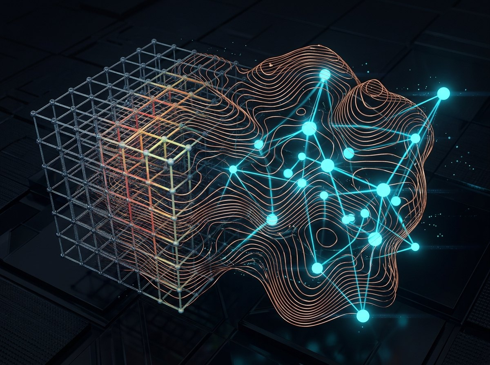

Project Archive · Reverse-Chronological
Work & Engineering Case Studies
Ordered from my most recent characterization, machine learning, and robotics work back to my earliest closed-ecosystem research. Click any project to open its dedicated page.

Materials Characterization & Morphological Analysis
Characterizing multi-phase crystal morphology, phase-boundary isolation, and microstructural fracture mechanisms in lapis lazuli across powdered, polished, and fractured specimens using XRD, SEM, and optical microscopy.

Machine Learning for Physical & Materials Systems
Building physics-informed machine learning pipelines and surrogate models to predict material properties and aerodynamic response surfaces.

Robotics & Mechatronic Actuation Prototypes
Designing multi-axis robotic mechanisms where structural link stiffness, drivetrain backlash, sensor feedback, and embedded control loops meet.

Micro-Class Competition Aircraft — Aero Design Team
Designing and fabricating ultralight competition RC aircraft where balsa grain anisotropy, carbon-fiber spars, and micro-avionics fight for every gram of payload.

Rock Surface Characterization & Fracture Analysis
Coursework and laboratory investigation of mineral cleavage planes, surface topography, and intergranular vs. transgranular fracture mechanisms.

Custom Ferric-Chloride Etched PCB & Hardware Controller
Taking an electronic circuit from schematic capture to a hand-etched bare copper FR4 board: mastering mask transfer, isotropic etch kinetics, and single-layer routing.

Supply Chain & Hardware Logistics Venture
Founded a company to learn firsthand how raw material sourcing, supplier minimum order quantities (MOQs), freight lead times, and unit economics work outside the lab.

Self-Sustaining Closed-Loop Terrarium
High school research project engineering a sealed biological micro-climate with stratified porous substrates to study long-term hydrological and carbon equilibrium.